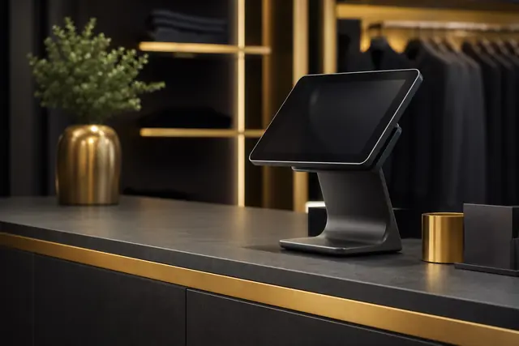

Category
Claude Code と業務ツール（会計・EC・SNS・チャット・予約など）をつなぐ自動化ガイド
2026.07.30
Claude Codeと施工管理アプリANDPADの運用を組み合わせ、工事日報の下書き・現場写真の整理・工程変更の案内文・案件データの集計をAI自動化する方法を解説。非エンジニアの建設・リフォーム会社の経営者や現場監督でも取り組める活用シーンと導入ステップを紹介します。
2026.07.29
Claude Codeとフードデリバリー運用を組み合わせ、宅配向けメニュー説明文・商品写真に添える言葉・セット企画・評価への返信・売上データの集計をAI自動化する方法を解説。非エンジニアの飲食店経営者でも取り組める活用シーンと導入ステップを紹介します。
2026.07.28
Claude CodeとGoogleドライブを組み合わせ、散らかった資料の棚卸し・ファイル名の統一・目的の書類をすぐ見つける検索・共有設定の点検をAI自動化する方法を解説。非エンジニアでも取り組める活用シーンと導入ステップを紹介します。
2026.07.27
Claude Codeと予約管理システムRESERVAを組み合わせ、予約枠の案内文づくり・前日リマインド・キャンセル対策・予約データ集計をAI自動化する方法を解説。教室・サロン・士業でも取り組める活用シーンと導入ステップを紹介します。
Claude Codeとスキマバイトサービスのタイミーを組み合わせ、募集文の作成・受け入れ手順書の整備・評価コメント・稼働データ集計をAI自動化する方法を解説。人手不足の飲食店・小売店・物流倉庫でも取り組める活用シーンと導入ステップを紹介します。
2026.07.26
Claude Codeと宿泊予約サイトじゃらんを組み合わせ、宿泊プランの紹介文づくり・口コミ返信・繁閑期の販促・インバウンド対応をAI自動化する方法を解説。小規模な旅館・ホテル・民泊のオーナー向けに活用シーンと導入ステップを紹介。
2026.07.25
Claude Codeと統合ビジネススイートZohoを組み合わせ、顧客管理・見積請求・連絡対応・データ集計をオールインワンでAI自動化する方法を解説。ツールが分散しがちな中小企業・一人社長向けに活用シーンと導入手順を紹介。
2026.07.24
Claude Codeとノーコード自動化ツールMake（旧Integromat）を組み合わせ、複数ステップの業務フロー設計・条件分岐の整理・データ受け渡し・エラー対応・既存シナリオ改善をAI自動化する方法を非エンジニア向けに解説。
2026.07.23
Claude Codeとイベント管理プラットフォームPeatixを組み合わせ、イベントページ作成・告知・参加者フォロー・アンケート集計・次回企画をAI自動化する方法を非エンジニア向けに解説。
2026.07.22
Claude Codeと翻訳サービスDeepLを組み合わせ、海外メール対応・越境ECの多言語化・インバウンド案内・資料翻訳をAI自動化する方法を非エンジニア向けに解説。
2026.07.21
Claude Codeとハンドメイドマーケットminneの運営を組み合わせ、作品説明文づくり・オーダーメイド相談の返信・レビュー返信・販売データの振り返りをAI自動化する方法を解説。
2026.07.20
Claude Codeとカラーミーショップの運営を組み合わせ、商品ページの説明文づくり・受注対応の文面・メルマガづくりをAI自動化する方法を、ネットショップ運営者向けに非エンジニア視点で解説。
2026.07.19
Claude CodeとQRコード決済PayPayの売上データを組み合わせ、売上集計・傾向の振り返り・クーポンや告知文づくりをAI自動化する方法を、実店舗・小規模事業者向けに非エンジニア視点で解説。
2026.07.18
Claude CodeとテキストSNSのThreadsを組み合わせ、投稿づくり・返信対応・反応の分析をAI自動化する方法を、写真がなくても発信できる中小企業・店舗向けに非エンジニア視点で解説。
2026.07.17
Claude Codeとビジネス特化SNSのLinkedInを組み合わせ、投稿文・プロフィール・つながり申請・発信テーマづくりをAI自動化する方法を、非エンジニアの経営者・一人社長向けに解説。
2026.07.15
Claude CodeとGoogle SheetsをMCPで連携し、売上集計・在庫管理・発注アラート・月次レポート作成を自動化する具体的な手順と中小企業の活用事例3選を解説。
2026.07.14
Claude Codeと共感採用の求人サービスWantedlyを組み合わせ、募集記事・ストーリー記事・スカウト文・カジュアル面談準備・反響データ整理をAI自動化する方法を、非エンジニア向けに解説。
2026.07.13
Claude Codeと海外向けハンドメイドマーケットEtsyを組み合わせ、英語の商品リスティング作成・海外顧客への返信・越境発送案内・レビュー分析・SEOタグ最適化をAI自動化する方法を、非エンジニア向けに解説。
2026.07.12
Claude CodeとビジュアルプラットフォームPinterestを組み合わせ、ピンの説明文づくり・ボード設計・投稿カレンダー・分析レポート・ECサイトへの送客導線づくりをAI自動化する方法を非エンジニア向けに解説。
2026.07.11
Claude Codeと集客ブログとして人気のアメブロを連携し、ネタ出し・記事の下書き作成・タイトル改善・お客様の声の記事化・予約導線づくりを非エンジニアでもAI自動化する方法を、サロン・店舗・個人事業主向けに解説。
2026.07.10
Claude Codeと人気のオンラインホワイトボードMiroを連携し、付箋の分類・ブレスト要約・アイデアのタスク化・業務図解・ワークショップ進行台本づくりを非エンジニアでもAI自動化する方法を中小企業向けに解説。
2026.07.09
Claude Codeと個人向けタスク管理ツールTodoistを連携し、会話からのタスク抽出・優先順位づけ・仕事の細分化・週次の振り返りを非エンジニアでもAI自動化する方法を、一人社長・フリーランス向けに解説。
2026.07.08
Claude Codeと経費精算システム楽楽精算を連携し、経費申請の事前チェック・科目仕分け・差し戻し連絡・請求書整理・月次レポート作成を非エンジニアでもAI自動化する方法を解説。
2026.07.07
Claude CodeとLINE WORKSを連携し、掲示板・お知らせ文づくり・定型返信・トークの要約・タスク整理を非エンジニアでもAI自動化する方法を解説。
2026.07.06
Claude Codeとboardを連携し、見積書・請求書の文面づくり・入金管理・督促文の下書き・取引先別の売上集計を非エンジニアでもAI自動化する方法を解説。
2026.07.05
Claude Codeとサイボウズ Officeを連携し、会議の日程調整・ワークフロー申請文の下書き・掲示板やメッセージの要点整理・議事メモや報告書づくりを非エンジニアでもAI自動化する方法を解説。
2026.07.04
Claude Codeとnoteを連携し、記事の企画・ネタ出し・構成案づくり・下書き作成・タイトル改善・過去記事の分析を非エンジニアでもAI自動化する方法を解説。
2026.07.03
Claude Codeとスマレジを連携し、日次の売上集計・在庫の減り方チェック・売れ筋分析・顧客の購買傾向整理・月次レポートづくりを非エンジニアでもAI自動化する方法を解説。
2026.07.02
Claude CodeとTikTokを連携し、ショート動画の企画・台本づくり・キャプション作成・1か月分の投稿企画・コメント返信・反応データの分析を非エンジニアでもAI自動化する方法を解説。
2026.06.30
Claude CodeとMicrosoft Teamsを連携し、会議の議事録自動作成・チャット要約・決定事項のタスク化・社内アナウンス下書き・週次サマリー作成を非エンジニアでもAI自動化する方法を解説。
2026.06.29
Claude CodeとYahoo!ショッピング（ストアクリエイターPro）を連携し、商品ページの文章づくり・受注対応の返信下書き・レビュー整理・セール告知文・売上/在庫の集計を非エンジニアでも効率化する方法を解説。
Claude Codeと弥生会計を連携し、仕訳の下書き・記帳チェック・月次レポート作成・経費の分類整理・決算準備を非エンジニアでもAI自動化する方法を解説。
2026.06.28
Claude Codeと食べログ（店舗管理画面）を連携し、口コミ返信・予約問い合わせ対応・季節メニューの紹介文・再来店促進メッセージ・口コミ/予約データの分析を非エンジニアでも効率化する方法を解説。
2026.06.26
Claude Codeとホットペッパービューティー（サロンボード）を連携し、口コミ返信・クーポン文・サロンブログの下書き、リピート促進メッセージ、予約・口コミデータの分析を非エンジニアでも効率化する方法を解説。
2026.06.25
Claude Codeとノーコードでページが作れるペライチを連携し、構成案・キャッチコピー作成、サービス説明の量産、FAQ・申込導線の設計、公開後のリライト提案を非エンジニアでも効率化する方法を解説。
2026.06.24
Claude CodeとAirレジの売上データを連携し、日次・月次の売上集計、売れ筋分析、発注候補出し、日報作成、複数店舗の横断比較を非エンジニアでも自動化する方法を解説。
2026.06.23
Claude CodeとSTORESを連携し、注文対応・発送更新、予約と在庫の連動、店頭POSとECの売上統合、商品説明作成、仕入れ提案を非エンジニアでも自動化する方法を解説。
2026.06.21
Claude Codeと楽天市場の店舗運営を組み合わせ、商品ページづくり、受注対応、レビュー整理、セール案内、売上・在庫データ集計を非エンジニアでも効率化する方法を解説。
2026.06.20
Claude CodeとAmazonセラーセントラルを組み合わせ、商品ページの文章づくり、注文対応、レビュー整理、売上・在庫データ集計を非エンジニアでも効率化する方法を解説。
2026.06.19
Claude CodeとGoogleドキュメントを組み合わせ、議事録の下書き、契約書・提案書の雛形づくり、長文要約、トーン統一と校正を非エンジニアでも効率化する方法を解説。
2026.06.18
Claude Codeとメルカリ Shopsを組み合わせ、商品説明文の作成、出品企画、注文・発送連絡の下書き、レビュー分析、売上レポート作成を非エンジニアでも効率化する方法を解説。
2026.06.17
Claude CodeとFacebookページを組み合わせ、投稿文の作成、投稿企画、コメント・メッセージ返信の下書き、広告文づくり、インサイト分析を非エンジニアでも効率化する方法を解説。中小企業・店舗向けの活用シーンと導入4ステップを紹介。
2026.06.16
Claude CodeとX（旧Twitter）を組み合わせ、投稿文の作成、投稿企画、リプライ返信の下書き、スレッド構成案づくり、反応データの分析を非エンジニアでも効率化する方法を解説。SNS運用が後回しになりがちな中小企業・店舗向けの活用シーンと導入4ステップを紹介。
2026.06.15
Claude CodeとIndeedを組み合わせ、求人原稿の作成、応募者対応の下書き、選考管理、面接質問づくり、採用レポート作成を非エンジニアでも効率化する方法を解説。採用担当を兼務する中小企業経営者向けの活用シーンと導入4ステップを紹介。
2026.06.14
Claude CodeとInstagramを連携し、投稿キャプション・ハッシュタグ作成、投稿企画、コメント返信の下書き、インサイト分析、月次レポート作成を非エンジニアでも効率化する方法を解説。SNS運用が後回しになりがちな中小企業・店舗向けの活用シーンと導入4ステップを紹介。
2026.06.13
Claude CodeとGoogleサーチコンソールを連携し、検索キーワード分析・順位レポート作成・改善ページ抽出・記事リライト提案を非エンジニアでも効率化する方法を解説。SEOが後回しになりがちな中小企業向けの活用シーンと導入4ステップを紹介。
2026.06.12
Claude CodeとノーコードのWebサイトビルダーWixを連携し、お知らせ更新・ブログ草稿・商品説明・FAQ整理・問い合わせ返信・SEO文面づくりを非エンジニアでも効率化する方法を解説。サイト運用が止まりがちな中小企業向けの活用シーンと導入4ステップを紹介。
2026.06.11
Claude Codeとジョブカン勤怠管理を連携し、打刻漏れチェック・残業超過アラート・シフト作成・月次勤怠レポートを非エンジニアでも自動化する方法を解説。勤怠まわりの手間を減らしたい中小企業向けの活用シーンと導入4ステップを紹介。
2026.06.10
Claude CodeとZendeskを連携し、問い合わせ返信の下書き作成・チケットの分類・FAQ整備・対応状況のレポート化を非エンジニアでも効率化する方法を解説。カスタマーサポートの負担を減らしたい中小企業向けの活用シーンと導入4ステップを紹介。
2026.06.09
Claude Codeとクラウドサインを連携し、契約書のたたき台づくり・送付前チェック・締結後の台帳管理・更新解約の期限管理を非エンジニアでも効率化する方法を解説。契約業務の負担を減らしたい中小企業向けの活用シーンと導入4ステップを紹介。
2026.06.07
Claude CodeとGoogle広告を連携し、キーワード調査・除外・広告文づくり・月次レポート集計・改善提案を非エンジニアでも効率化する方法を解説。代理店任せから脱却したい中小企業向けの活用シーンと導入4ステップを紹介。
2026.06.06
Claude CodeとYouTubeを連携し、概要欄・タグ作成・タイトル案・字幕整形・コメント返信・再生分析を非エンジニアでも自動化する方法を解説。動画運用が続かない中小企業向けの活用シーンと導入4ステップを紹介。
2026.06.05
Claude CodeとWordPressを連携し、記事の下書き作成・既存記事のリライト・SEO整備・カテゴリ整理・お知らせ更新・アクセス分析を非エンジニアでも自動化する方法を解説。更新が止まりがちな中小企業向けの活用シーンと導入4ステップを紹介。
2026.06.04
Claude Codeと無料ネットショップBASEを連携し、注文対応・在庫管理・商品説明文作成・リピート客フォローを非エンジニアでも自動化する方法を解説。個人事業主・副業オーナー・小規模ショップ向けの活用シーンと導入4ステップを紹介。

2026.06.03
Claude CodeとPOS・決済サービスSquareを連携し、売上集計・在庫管理・予約対応・リピート客フォローを非エンジニアでも自動化する方法を解説。実店舗・小売店・サロン向けの活用シーンと導入4ステップを紹介。
2026.06.02
Claude Codeと名刺管理サービスSansanを連携し、名刺の自動分類・フォロー連絡のドラフト作成・見込み先の優先リスト化を非エンジニアでも自動化する方法を解説。業種別の活用シーンと導入4ステップを紹介。
2026.06.01
Claude CodeとGoogleフォームを連携し、回答の自動集計・分類、問い合わせ返信ドラフト、申込対応を非エンジニアでも自動化する方法を解説。業種別の活用シーンと導入4ステップを紹介。
Claude CodeとGoogleビジネスプロフィールを連携し、口コミ返信・店舗投稿・MEO運用を非エンジニアでも半自動化する方法を解説。業種別の活用シーンと導入4ステップを紹介。
Claude Codeとマネーフォワード クラウドを連携し、請求書作成・経費整理・月次サマリーを非エンジニアでも自動化する方法を解説。業種別の活用シーンと導入4ステップを紹介。
2026.05.31
Claude CodeとGA4を連携し、アクセス解析・週次レポート・流入分析・改善提案を非エンジニアでも自動化する方法を中小企業向けに解説。眠っているWebデータを見える化し次の一手に変える。
2026.05.29
Claude CodeとDropboxを連携し、ファイル整理・共有リンク発行・契約書仕分け・バックアップ運用を半自動化する方法を中小企業向けに解説。属人化したファイル管理を仕組み化できる。
2026.05.28
Claude CodeとGoogleカレンダーを連携し、日程調整・会議準備・リマインド・スケジュール分析を半自動化する方法を中小企業向けに解説。予定確定は人承認を保ちつつ月10〜20時間の工数削減を実現。
2026.05.27
Claude CodeとLINE公式アカウントを連携し、配信文作成・問い合わせ返信・予約案内・反応分析を半自動化する方法を店舗向けに解説。送信前の人承認を保ちつつ月10〜20時間の工数削減を実現。
2026.05.26
Claude CodeとCanvaを連携し、SNS画像・バナー・チラシ・資料デザインの制作を半自動化する方法を中小企業向けに解説。センスに依存せず月10〜20時間の制作工数削減を実現。
2026.05.25
Claude CodeとSmartHRを連携し、入退社手続き・年末調整・勤怠集計・労務書類作成までを一括自動化する方法を中小企業向けに解説。属人化を解消し月10時間前後の工数削減を実現。
2026.05.24
Claude CodeとMailchimpを連携し、メルマガの企画・原稿作成・セグメント抽出・配信予約・効果測定までを一括自動化する方法を中小企業向けに解説。月6時間の工数削減を実現。
2026.05.22
Claude CodeとAirtableを連携し、顧客管理・案件管理・在庫管理など中小企業のデータベース業務をAI自動化する方法を解説。PAT発行から日次レポート・欠品アラートまで4週間ロードマップで導入。
2026.05.21
Claude CodeとZoomを連携し、議事録自動生成・録画資産化・商談トーク分析・経営レポートを非エンジニアでも実装する方法を解説。中小企業向け活用5選と4ステップ導入。
2026.05.20
Claude CodeとCalendlyを連携し、商談予約の事前案内・前日リマインド・キャンセル分析・経営レポート生成を非エンジニアでも自動化する方法を解説。中小企業向け活用5選と4ステップ導入。
2026.05.19
Claude CodeとTrelloを連携し、カード自動起票・移動・負荷バランス分析・週次レポートを非エンジニアでも自動化する方法を解説。中小企業向け活用5選と4ステップ導入。
2026.05.18
Claude CodeとBacklogを連携し、課題自動起票・進捗ダイジェスト・週次レポート・ガントチャート更新までを非エンジニアでも自動化する方法を解説。中小企業向け活用5選と4ステップ導入。
2026.05.17
Claude CodeとAsanaを連携し、議事録からのタスク自動切り出し・進捗ダイジェスト・週次レポート作成までを非エンジニアでも自動化する方法を解説。中小企業向け活用5選と4ステップ導入。
2026.05.16
Claude CodeとSalesforceを連携し、リードスコアリング・営業日報の自動要約・商談ステージ更新提案までを非エンジニアでも実装できる方法を解説。中小企業向け活用5選と導入4ステップを紹介。
2026.05.14
Claude CodeとShopifyを連携し、商品登録・受注処理・在庫管理・顧客対応・レビュー分析までEC運営をAI自動化する方法を解説。中小企業向け活用5選と実践プロンプト例を紹介。
2026.05.13
Claude CodeとHubSpotを連携し、見込み顧客の自動スコアリング・業種別ナーチャリング・商談ステージ更新・営業日報の自動要約をAIに任せる方法を解説。中小企業向け活用5選と導入4ステップを紹介。
2026.05.12
Claude Codeとfreeeを連携し、月次仕訳・請求書発行・月次レポート・決算前準備をAIに任せる方法を解説。中小企業向け活用5選と非エンジニア向け導入4ステップを紹介。
Claude CodeとChatworkを連携し、メッセージ要約・タスク自動化・FAQ返信・日報集計をAIに任せる方法を解説。中小企業向けの活用5選と非エンジニア向け導入4ステップを紹介。
2026.05.09
Claude CodeとMicrosoft 365を連携し、Excel月次集計・Word契約書差し込み・PowerPoint下書き・Outlook返信ドラフトを自動化する方法を解説。中小企業向けの活用5選と非エンジニア向け導入4ステップを紹介。
2026.05.08
Claude Codeとkintoneを連携し、レコード自動登録・横断集計レポート・他SaaS同期までAIで自動運用する方法を解説。中小企業の活用事例5選と導入5ステップ、月数千円〜の運用コストで実現できるポイントを紹介。
2026.05.07
Claude CodeとZapierをWebhookで連携し、AI自動分類・要約・返信ドラフト生成までを横展開する実践ガイド。中小企業向け活用5選と非エンジニア向け4ステップを解説。
2026.05.06
Claude CodeとSlackを連携し、チャンネル要約・社内FAQ自動応答・通知集約・期限リマインドを実現する実践ガイド。中小企業の活用5選と非エンジニア向け導入4ステップを解説。
2026.05.05
Claude CodeとGmailをMCP経由で連携し、受信メールのAI仕分け・返信ドラフト自動生成・営業フォロー自動化を実現する実践ガイド。中小企業の事例5選と導入5ステップ。
2026.05.04
Claude CodeとDiscordを連携し、Webhook通知・スラッシュコマンドBot・AI要約通知の3パターンで社内通知をAI化する実践ガイド。中小企業の導入事例5選つき。
2026.05.01
Claude CodeとNotion MCPを連携させ、議事録・タスク・顧客台帳・週次レポートをAIに任せる方法を解説。中小企業向け活用5選と非エンジニア向け導入4ステップを紹介。
2026.04.25
Claude CodeでStripe MCPを操作し、月次MRR・カード期限切れフォロー・解約理由集計を自動化。中小企業の課金業務効率化4ステップを解説。
2026.04.18
Notion・クラウドストレージ・メール・カレンダーを一つの指示で横断操作。ツール間の転記ロスを解消する MCP 連携の実践ガイド。
2026.04.12
マネーフォワードがMCPに対応。Claude Codeから直接仕訳入力・決算書作成が可能に。中小企業の会計業務を劇的に効率化する方法を解説。